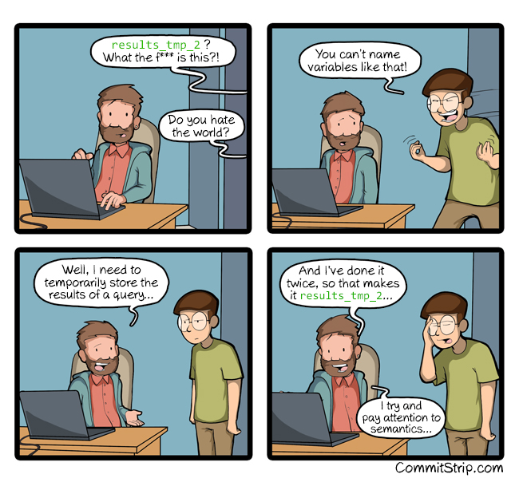

syllabus, problem-solving
2026-01-06
You are never required to disclose personal information to me or any instructors. These guidelines are for all classes at UChicago, not just this one.
You do not need to:
You are an adult with priorities and the capacity for cost/benefit decision-making. You can decide what you want to share and with whom. If you need to miss class because you have terrible period cramps, are having a panic attack, are recovering from a migraine, think your roommate might have COVID, need to cram for an exam for a different class, are shamefully hung over, or just really don’t wanna come to campus. You do not need to explain yourself to me or anyone else. Just take care of yourself, and take responsibility for effects on your learning and grades.
This doesn’t mean there are never consequences for missing class. You are responsible for keeping up with the material and assignments (per your accommodations, if applicable), and are subject to penalties defined by the syllabus.
You will not be penalized for (with disclosure):
You will be penalized for:
Submissions that do not follow these guidelines will receive a non-negotiable 0.
To see GPT’s coding skills in action, watch DougDoug force it to create Snake 2 (with mixed success).
You should only be taking this class if you want to gain practical skills that will be useful to you outside of the class.
Hopefully you are using the class to make progress on a research project you are invested in. If you do not use AI wisely, you may not be “cheating” in a way that will hurt your grade, but you will be cheating yourself out of the reason you joined the class. If you don’t care enough to actually learn the material yourself, this probably isn’t the right class for you.
You can read my guide for what I personally believe are ethical and constructive uses of AI in higher education.
You earn points by demonstrating each of [##] specific learning objectives …
You start at 0 points and work up to 100. You don’t start at 100 and lose points. Meeting minimum requirements will get you an 85, a B. Earning an A takes more than that.
Examples of what “additional engagement” might look like can be found here.
Questions > Answers
Knowing how to ask the right questions to solve problems and learn independently is legitimately, indisputably more valuable than the party trick of recalling lots of functions and language-specific processes.
The best way to troubleshoot is to avoid it.
Tip
(note about the stylr package)
Keep Collaboration in Mind
Be kind not just to others who may work with you, but also to future-you.
Natural languages > programming languages
The language you speak is infinitely more intuitive, nuanced, specific, and adaptable. Take advantage of it.
“There are only two hard things in Computer Science: cache invalidation and naming things.” — Phil Karlton
Names should describe the named thing!
Not as easy as it sounds.

D2M-R Q1 | Week 1